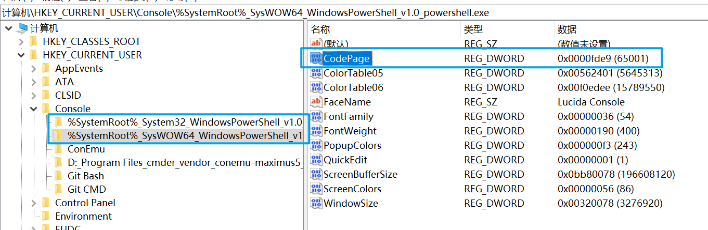
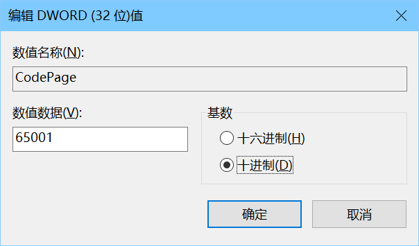

Windows 修改控制台编码为 UTF-8
本文最后更新于：2022年3月23日 晚上
直入主题
修改 Powershell 默认编码
打开注册表，进入 计算机\HKEY_CURRENT_USER\Console ，该路径下有两个 Powershell 的注册表项，分别对应 32 位和 64 位的版本，如图：

双击 CodePage 进行修改，基数选择十进制，数值数据修改为 65001 ，点击确定保存即可。

修改 CMD 默认编码
打开注册表并进入路径 计算机\HKEY_LOCAL_MACHINE\SOFTWARE\Microsoft\Command Processor ，修改 autorun 项的数值数据为 chcp 65001>nul ，点击确定保存即可。一定注意是 nul 而不是 null 。
如果没有 autorun 可以新建一个字符串值的项，数值名称设置为 autorun ，其他操作保持一致。
知根知底
查看控制台当前的编码，CMD 和 Powershell 都适用：
chcp没修改过的话应该会输出：Active code page: 936 ，表示当前的编码为 GBK 编码。
关于代码页可以参考：
微软官方文档：https://docs.microsoft.com/zh-cn/windows-server/administration/windows-commands/chcp
以及：https://ss64.com/nt/chcp.html
主要记住 GBK 编码对应 936 ，而 UTF-8 编码对应 65001 。
前文对 CMD 修改编码用的是：
chcp 65001>nul首先 chcp 65001 即设置编码为 UTF-8 ，不带后面的部分也是可以的，只不过会在启动 CMD 的时候输出一行 Active code page: 65001 ，强迫症可能有点难受，加上后面的部分就可以避免输出这一行。
> 是重定向符，即将前面的输出重定向的后面的设备，可能是文件或设备，而 nul 是 Windows 的空设备名，可以尝试一下在 Windows 中新建一个名叫 nul ，没法创建，一定注意别看成 null 了，如果写成了 null ，会认为这是一个文件，所以每次启动 CMD 都会将 Active code page: 65001 写入到当前目录的 null 文件中，搞不好还会遇到一些奇怪的问题。
重定向：https://docs.microsoft.com/zh-cn/powershell/module/microsoft.powershell.core/about/about_redirection
空设备名 nul ：https://ss64.com/nt/nul.html